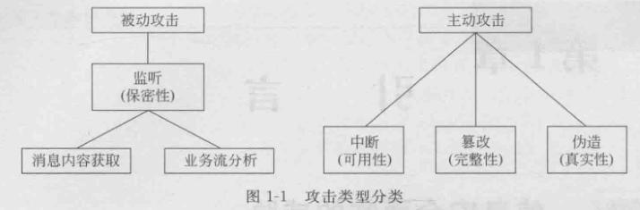
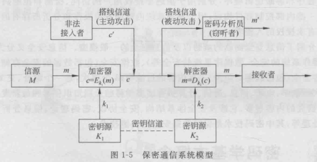

重学现代密码学v4
本文重学《现代密码学（第四版）》（杨波编著，清华大学出版社），旨在巩固基础，同时为后人带来便利
你问我都5202了，最新的是第六版，为什么还要用第四版？
因为我只有第四版的电子书（悲
第1章 引言
1.1-1.3

安全业务：保密业务（防止被动攻击），认证业务（通信真实性），完整性业务，不可否认业务，访问控制

| 攻击模型 | 攻击者能力描述 | 攻击强度 | 示例场景 |
|---|---|---|---|
| 唯密文攻击（Ciphertext Only Attack, COA） | 只能获取加密后的密文 | 最弱 | 截获通信数据 |
| 已知明文攻击（Known Plaintext Attack, KPA） | 拥有部分明文及其对应的密文 | 较弱 | 知道邮件模板内容 |
| 选择明文攻击（Chosen Plaintext Attack, CPA） | 可以选择明文并获取其密文 | 较强 | 与加密系统交互，获得加密结果 |
| 选择密文攻击（Chosen Ciphertext Attack, CCA） | 可以选择密文并获取其解密结果（不包括目标） | 最强 | 与解密系统交互，如解密Oracle攻击 |
1.4 古典密码
凯撒密码： （位移三位)
（位移三位)
位移密码： （位移指定位)
（位移指定位)
仿射密码：
多表代换密码： （仿射密码，换为矩阵的形式)
（仿射密码，换为矩阵的形式)
第2章 流密码
流密码是一种对称加密
基本思想：利用密钥k产生一个密钥流 $z=z_0z_1…$
加密：
2.1 流密码的基本概念
2.1.1 同步流密码
2.1.2 有限状态自动机
2.1.3 密钥流产生器
2.2 线性反馈移位寄存器
2.3 线性移位寄存器的一元多项式表示
2.4 m序列的伪随机性
2.5 m序列密码的破译
2.6 非线性序列
2.6.1 Geffe序列生成器
2.6.2 JK触发器
2.6.3 Pless 生成器
2.6.4 钟控序列生成器
习题
第3章 分组密码体制
3.1 分组密码概述
3.1.1 代换
3.1.2 扩散和混淆
3.1.3 Feistel 密码结构
3.2 数据加密标准…
3.2.1 DES 描述
3.2.2 二重 DES
3.2.3 两个密钥的三重DES
3.2.4 3个密钥的三重 DES
3.3 差分密码分析与线性密码分析
3.3.1 差分密码分析
3.3.2 线性密码分析
3.4 分组密码的运行模式
3.4.1 电码本模式
3.4.2 密码分组链接模式
3.4.3 密码反馈模式
3.4.4 输出反馈模式
3.5 IDEA
3.5.1 设计原理
3.5.2 加密过程
3.6 AES 算法 Rijndael
3.6.1 Rijndael 的数学基础和设计思想
3.6.2 算法说明
3.7 中国商用密码算法 SM4
3.8 祖冲之密码…
3.8.1 算法中的符号及含义
3.8.2 祖冲之密码的算法结构
3.8.3 祖冲之密码的运行
3.8.4 基于祖冲之密码的机密性算法 128-EEA3
第4章 公钥密码
4.1 密码学中一些常用的数学知识
4.1.1 群、环、域
4.1.2 素数和互素数
4.1.3 模运算
4.1.4 模指数运算
4.1.5 费尔马定理、欧拉定理、卡米歇尔定理
4.1.6 素性检验
4.1.7 欧几里得算法
4.1.8 中国剩余定理
4.1.9 离散对数
4.1.10 平方剩余
4.1.11 循环群
4.1.12 循环群的选取
4.1.13 双线性映射
4.1.14 计算复杂性
4.2 公钥密码体制的基本概念
4.2.1 公钥密码体制的原理
4.2.2 公钥密码算法应满足的要求
4.2.3 对公钥密码体制的攻击
4.3 RSA算法
4.3.1 算法描述
4.3.2 RSA算法中的计算问题
4.3.3 一种改进的RSA实现方法
4.3.4 RSA的安全性
4.3.5 对RSA的攻击
4.4 背包密码体制
4.5 Rabin 密码体制
4.6 NTRU公钥密码系统
4.7 椭圆曲线密码体制
4.7.1 椭圆曲线
4.7.2 有限域上的椭圆曲线
4.7.3 椭圆曲线上的点数
4.7.4 明文消息到椭圆曲线上的嵌入
4.7.5 椭圆曲线上的密码
4.8 SM2椭圆曲线公钥密码加密算法
第5章 密钥分配与密钥管理
5.1 单钥加密体制的密钥分配
5.1.1 密钥分配的基本方法
5.1.2 一个实例
5.1.3 密钥的分层控制
5.1.4 会话密钥的有效期
5.1.5 无中心的密钥控制
5.1.6 密钥的控制使用
5.2 公钥加密体制的密钥管理
5.2.1 公钥的分配
5.2.2 用公钥加密分配单钥密码体制的密钥
5.2.3 Diffie-Hellman 密钥交换
5.3 随机数的产生
5.3.1 随机数的使用
5.3.2 随机数源
5.3.3 伪随机数产生器
5.3.4 基于密码算法的随机数产生器
5.3.5 随机比特产生器
5.4 秘密分割
5.4.1 秘密分割门限方案
5.4.2 Shamir 门限方案
5.4.3 基于中国剩余定理的门限方案
第6章 消息认证和哈希函数
6.1 消息认证码
6.1.1 消息认证码的定义及使用方式
6.1.2 产生MAC的函数应满足的要求
6.1.3 数据认证算法
6.1.4 基于祖冲之密码的完整性算法128-ΕΙΑ3
6.2 哈希函数
6.2.1 哈希函数的定义及使用方式
6.2.2 哈希函数应满足的条件
6.2.3 生日攻击
6.2.4 迭代型哈希函数的一般结构
6.3 MD5哈希算法
6.3.1 算法描述
6.3.2 MD5的压缩函数
6.3.3 MD5的安全性
6.4 安全哈希算法
6.4.1 算法描述
6.4.2 SHA的压缩函数
6.4.3 SHA与MD5的比较
6.4.4 对SHA的攻击现状
6.5 HMAC
6.5.1 HMAC的设计目标
6.5.2 算法描述
6.5.3 HMAC的安全性
6.6 SM3哈希算法
6.6.1 SM3 哈希算法的描述
6.6.2 SM3 哈希算法的安全性
习题
第7章 数字签名和认证协议
7.1 数字签名的基本概念
7.1.1 数字签名应满足的要求
7.1.2 数字签名的产生方式
7.1.3 数字签名的执行方式
7.2 数字签名标准
7.2.1 DSS的基本方式
7.2.2 数字签名算法 DSA
7.3 其他签名方案
7.3.1 基于离散对数问题的数字签名体制
7.3.2 基于大数分解问题的数字签名体制
7.3.3 基于身份的数字签名体制
7.4 SM2椭圆曲线公钥密码签名算法
7.5 认证协议
7.5.1 相互认证
7.5.2 单向认证
第8章 密码协议
8.1 一些基本协议
8.1.1 智力扑克
8.1.2 掷硬币协议
8.1.3 数字承诺协议
8.1.4 不经意传输协议
8.2 零知识证明
8.2.1 交互式证明系统
8.2.2 交互式证明系统的定义
8.2.3 交互式证明系统的零知识性
8.2.4 非交互式证明系统
8.2.5 适应性安全的非交互式零知识证明
8.2.6 零知识证明协议的组合
8.2.7 图的三色问题的零知识证明
8.2.8 知识证明
8.2.9 简化的Fiat-Shamir身份识别方案
8.2.10 Fiat-Shamir 身份识别方案
8.3 安全多方计算协议
8.3.1 安全多方计算问题
8.3.2 半诚实敌手模型
8.3.3 恶意敌手模型
习题
第9章 可证明安全
9.1 语义安全的公钥密码体制的定义
9.1.1 选择明文攻击下的不可区分性
9.1.2 公钥加密方案在选择密文攻击下的不可区分性
9.1.3 公钥加密方案在适应性选择密文攻击下的不可区分性
9.1.4 归约
9.2 语义安全的RSA加密方案
9.2.1 RSA问题和RSA假设
9.2.2 选择明文安全的RSA 加密
9.2.3 选择密文安全的RSA 加密
9.3 Paillier 公钥密码系统
9.3.1 合数幂剩余类的判定
9.3.2 合数幂剩余类的计算
9.3.3 基于合数幂剩余类问题的概率加密方案
9.3.4 基于合数幂剩余类问题的单向陷门置换
9.3.5 Paillier 密码系统的性质
9.4 Cramer-Shoup 密码系统
9.4.1 Cramer-Shoup 密码系统的基本机制
9.4.2 Cramer-Shoup 密码系统的安全性证明
9.5 RSA-FDH 签名方案
9.5.1 RSA签名方案
9.5.2 RSA-FDH签名方案的描述
9.5.3 RSA-FDH签名方案的改进
9.6 BLS 短签名方案
9.6.1 BLS短签名方案所基于的安全性假设
9.6.2 BLS 短签名方案描述
9.6.3 BLS 短签名方案的改进一
9.6.4 BLS短签名方案的改进二
9.7 基于身份的密码体制
9.7.1 基于身份的密码体制定义和安全模型
9.7.2 随机谕言机模型下的基于身份的密码体制
9.8 分叉引理
习题
第10章 网络加密与认证
10.1 网络通信加密
10.1.1 开放系统互连和TCP/IP分层模型
10.1.2 网络加密方式
10.2 Kerberos 认证系统
10.2.1 Kerberos V4
10.2.2 Kerberos 区域与多区域的Kerberos
10.3 X.509认证业务
10.3.1 证书
10.3.2 认证过程
10.4 PGP
10.4.1 运行方式
10.4.2 密钥和密钥环
10.4.3 公钥管理
习题
本博客所有文章除特别声明外，均采用 CC BY-NC-SA 4.0 许可协议。转载请注明来源 coperlm's Blog！
相关推荐
.gif)
2024-09-07
Chameleon Hashing and Signatures阅读笔记
文献简介标题：Chameleon Hash and Signatures 作者：Hugo Krawczyk , Tal Rabin 期刊：无 年份：1998 重要程度：4 摘要 引入变色龙签名，提供不可抵赖签名（和常规数字签名一样） 不允许接收方在未经允许的情况下向第三方披露明文（和不可抵赖签名相关，但是算法简单和高效实现） 本质上不交互，不涉及零知识证明的设计和复杂性（传统不可抵赖签名基于零知识证明）。哈希函数的产生通过标准的hash then sign 此哈希函数...
.gif)
2024-09-25
SM2椭圆曲线加密算法学习笔记
此文章用于记录笔者对于SM2椭圆曲线加密算法的学习 前置知识ElGamal离散对数密码体制 公钥密钥生成 Alice首先构造一条椭圆曲线 $E$，在曲线上选择一点 $G$ 作为生成元，$n$ 为 $G$ 的阶（且 $n$ 必须为质数)。此时构成了一个循环群 $$。 Alice选择一个私钥 $k (k < n)$，生成公钥 $Q = kG$ Alice将公钥组 $(E,Q,G)$ 发送给Bob 加密过程 Bob收到信息后，将明文编码为 $M$，$M$ 为曲线上一点，并选择一个随机数 $r$（$r < n$，$n$ 为 $G$ 的阶） Bob计算点 $Cipher_1$ 与 $Cipher_2$ 即两段密文，计算方法如下 $Cipher_1 = M + rQ\ Cipher_2 = rG$ Bob把 $Cipher_1$ 和 $Cipher_2$ 发给Alice 解密过程 Alice收到密文后，为了获得 $M$，只需要 $Cipher_1 - k · Cipher_2$，因为 $Cipher1 - k*Cipher2 = M + rQ - krG...
.gif)
2025-04-24
katz密码学教材v3阅读笔记
本篇笔记用于记录阅读 introduction to modern cryptography (3rd Edition) 一书的阅读 重点在于公钥密码部分 本文尽量通俗讲解，但是不能代替阅读原著 目录第一章介绍了一些引入，包括公钥加密，历史和现代密码学设计原则 第二章介绍了一些完美加密，也算引入部分（还有信息论的香农定理，很前段时间读论文在[OB22]遇到了） 以上是第一部分，用于引入 第三章介绍了对称加密，然后我打算跳了~ 第四章讲消息认证码MAC（等我有钱了也要买MAC（不是这个mac）） 第五章讲CCA安全，CCA也就是选择明文攻击 第六章讲哈希函数，目录看起来是区块链的基础（有默克尔树之类的） 第七章讲流密码之类的~不懂，后面再看看 第八章是...
.gif)
2024-09-27
公钥密码学经典方案30篇 学习笔记（初次阅读）
本文是 荔枝橙味拱腰觅马糕守 一文的后继，主要内容是对于 方案构造学习 一章中的 尝试发现方案构造错误 一节下的 30个经典方案的学习笔记 经过初次阅读尝试，发现笔者英文阅读能力较低，不足以在短暂时间内完成大量论文的阅读；故选择了在翻译器和人工智能的帮助下来进行阅读，以提升效率，并为第二次阅读打好基础 1984, A Public Key Cryptosystem and a Signature Scheme Based on Discrete Logarithms. [34]引言1976年，Diffie和Hellman首次提出了公钥密码的概念，并依赖离散对数问题和素数域上的计算复杂性来构造其密钥交换协议。ElGamal的工作正是基于这种思想，进一步提出了一个可以实现消息加密和解密的公钥加密系统，以及一个数字签名方案。 公钥密码系统公钥密码体制的基本思想是使用 Diffie-Hellman 密钥交换的基础 首先，通信双方选择一个大质数 $p$ 和生成元 $g$ ，这些参数都是公开的 然后双方分别选取自己的私钥（分别是 $x_A$ 和...
.gif)
2024-09-29
后量子学习笔记·其二
在 撬开后量子的大门 一文中，我们初步学习了后量子密码学，本篇博客，力求对后量子密码学进行进一步学习 量子计算我们通常说的量子计算就是通过量子逻辑门来操作处于叠加态的量子。比如Hadamard门，简称H门，他的一个主要功能就是通过计算基态产生等概率的叠加态。通过H门变换后的单量子叠加态为： $H(|Φ_1⟩)=\frac{1}{\sqrt{2}}(|0⟩+|1⟩)$ 两种基态的坍塌概率都为 $\frac{1}{\sqrt{2}}$，两个量子的H门得到的结果如下： $H(|Φ_2⟩)=\frac{1}{\sqrt{2^2}}(|00⟩+|01⟩+|10⟩+|11⟩)$ 每个态坍塌的概率 $\frac{1}{\sqrt{4}}$...
.gif)
2024-09-04
后量子密码-LWE问题
LWE(Learning With Errors)问题，基于格 问题简化： 密码向量：设一个位置的秘密向量 $s\in\mathbb{Z}_q^n$ （$\mathbb{Z}_q^n$是模 $q$ 的整数环，$n$ 是向量的维度） 线性方程组：给定一系列的线性方程 $ai⋅s+ei\ (\mod q\ )$，其中 $a_i\in\mathbb{Z}_q^n$ 是已知的随机向量，$e_i$ 是从某个噪声分布中抽取的小整数噪声。 目标：给定这些方程（即给定多个 $a_i,b_i=a_i\cdot s+e_i$ 对），求解秘密向量 $s$。
.gif)
.gif)
.gif)
.gif)